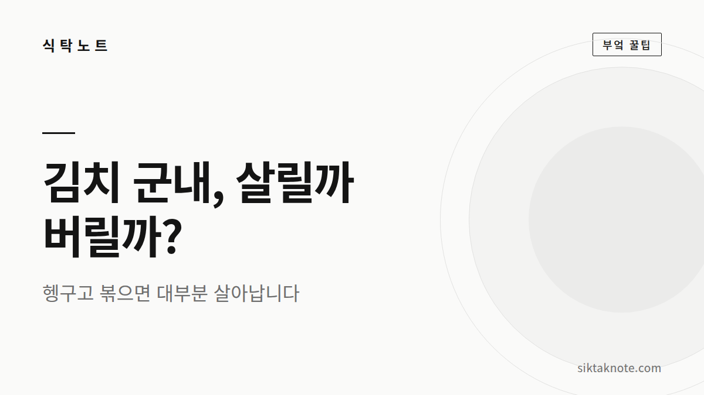
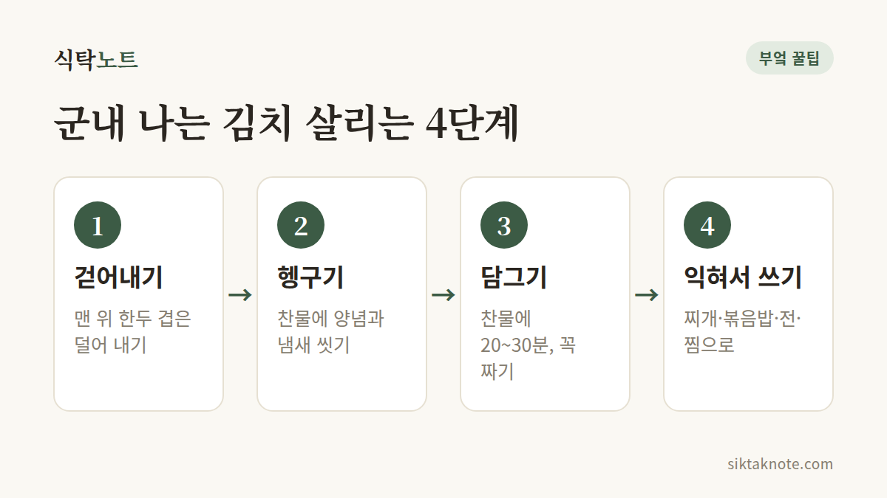
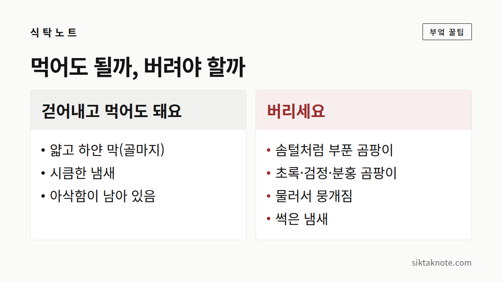

김치에서 군내가 나요 — 버리기 전에 해볼 것, 버려야 할 때

3줄 요약
- 군내는 대부분 공기와 닿은 김치에서 나요. 찬물에 헹구거나 담갔다가 찌개·볶음으로 쓰면 돼요.
- 위에 생긴 하얀 막(골마지)은 걷어내고 씻으면 대개 먹을 수 있어요.
- 털처럼 피어난 곰팡이, 색깔 있는 곰팡이, 흐물흐물한 김치는 아깝더라도 버려요.

시큼한 냄새와 군내는 달라요
김치통을 열었는데 쿰쿰한 냄새가 훅 올라오면 마음이 덜컥하죠. 그런데 잘 익은 김치의 시큼한 냄새와 군내는 서로 다른 거예요.
군내는 김치가 국물 밖으로 나와 공기와 오래 닿거나, 꺼냈다 넣었다 하면서 온도가 자주 바뀔 때 생겨요. 그때 김치 표면에 효모 같은 미생물이 자라면서 쿰쿰하고 텁텁한 냄새가 나는 거예요. 그래서 통 맨 위나 가장자리 김치가 제일 심하고요.

군내 나는 김치, 이렇게 살려요
- 냄새가 심한 맨 위 한두 겹은 따로 덜어 내요.
- 찬물에 헹궈요. 양념과 함께 냄새도 상당 부분 씻겨 나가요.
- 냄새가 남아 있으면 찬물에 20~30분 담갔다가 꼭 짜요. 짠맛과 신맛도 같이 줄어들어요.
- 생으로 먹기보다 김치찌개, 김치볶음밥, 김치전, 김치찜처럼 익혀서 써요.

요리할 땐 이렇게 냄새를 눌러요
들기름이나 식용유에 김치를 먼저 충분히 볶아 주면, 쿰쿰하던 냄새가 어느새 고소한 향으로 바뀌어요. 멸치나 돼지고기, 참치를 넣으면 감칠맛이 냄새를 덮어 주고요. 묵은 김치의 날카로운 신맛은 설탕을 아주 조금 넣으면 둥글어지고, 대파와 양파를 넉넉히 넣으면 단맛과 향이 남은 군내까지 잡아 줘요.
하얀 막이 생겼다면
김치 국물 위에 얇게 뜨는 하얀 막을 흔히 "골마지"라고 불러요. 대부분 효모의 일종이라, 그 부분을 걷어내고 김치를 깨끗이 씻은 뒤 익혀 먹는 경우가 많아요.
하지만 이런 모습이라면 아깝더라도 버려야 해요. 솜털처럼 부풀어 오른 곰팡이가 있을 때, 초록·검정·분홍 같은 색깔 있는 곰팡이가 보일 때, 김치가 물러서 손으로 잡으면 뭉개질 때, 그리고 시큼함이 아니라 썩은 냄새가 날 때예요.

처음부터 군내 안 나게 두는 법
가장 중요한 건 공기와 닿는 면을 줄이는 거예요. 김치를 국물에 잠기도록 꾹 눌러 두고, 비닐이나 배추 겉잎으로 윗면을 덮어 주세요. 큰 통을 자주 열기보다는 며칠 먹을 만큼 작은 통에 덜어 두고 먹는 쪽이 낫고요. 김치가 줄어서 빈 공간이 커졌다면 작은 통으로 옮겨 담아요. 먹던 젓가락이 들어가면 쉽게 상하니까, 깨끗한 집게를 쓰는 것도 잊지 말고요.
군내 난 김치는 대부분 버릴 필요가 없어요. 헹구고, 볶고, 끓이면 오히려 깊은 맛을 내는 재료가 되거든요. 다만 털 같은 곰팡이가 피었거나 물러진 김치는 미련 없이 보내 주세요. 그게 식탁을 지키는 가장 쉬운 방법이에요.